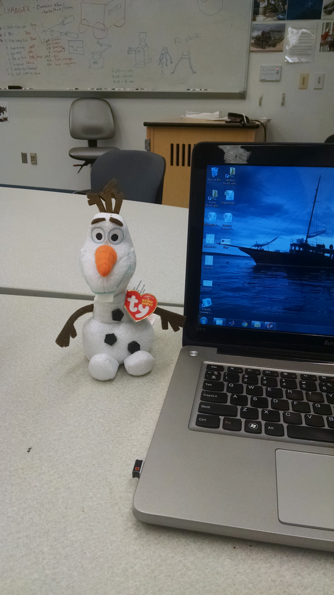

Objectives
Our main goal was to create a cute and interactive robot that dances in reaction to facial expressions and to integrate facial recognition to detect basic emotions. Our minimum viable product for demo day is to create a robot that demonstrates three different dances and that people would be able to interact with.
Final Product
Full functional skeleton
This playlist shows all of the dances operating without the smile detector, raspberry pi, or penguin skin.
Full penguin dances
This playlist shows all of the dances operating without the smile detector or raspberry pi.
Full functionality
A demonstration of our project working with all dance, smile detector, raspberry pi, and penguin components on demo day.
System Diagram

Inspiration
Fundamentally, we wanted to create a robot that would dance in reaction to facial expressions. There are several routes that we could have taken such as creating a humanoid robot or just the upper body to limit the degrees of freedom. However, we decided that creating an adorable, non-human robot would appeal to a wider audience because of the added emotional attachment. As a result, we researched dancing robots such as Hexy, Keepon, and solar powered dancing flowers for inspiration. We decided to use Keepon for our main inspiration because it had four degrees of a freedom and we could borrow one from the Olin Robotics Lab to use as a mechanical reference. As we progressed through the project, we have incorporated our own mechanisms, dances, and motions that have improved or changed the original design to match our needs.
Figure 1: Keepon Commerical that explains some of its functions
Figure 2: Some internal Keepon mechanisms
Aesthetic
Figure 3: Olaf doll that we ordered
Our vision shifted from initially having the covering of the stick be Olaf from the Disney movie Frozen. The doll we ordered was much smaller and stiffer than expected or desired, so we took a trip to the toy store and bought a fuzzy penguin stuffed animal, allowing us to ensure the dimensions and flexibility of the fabric, as well as keeping the cute factor.